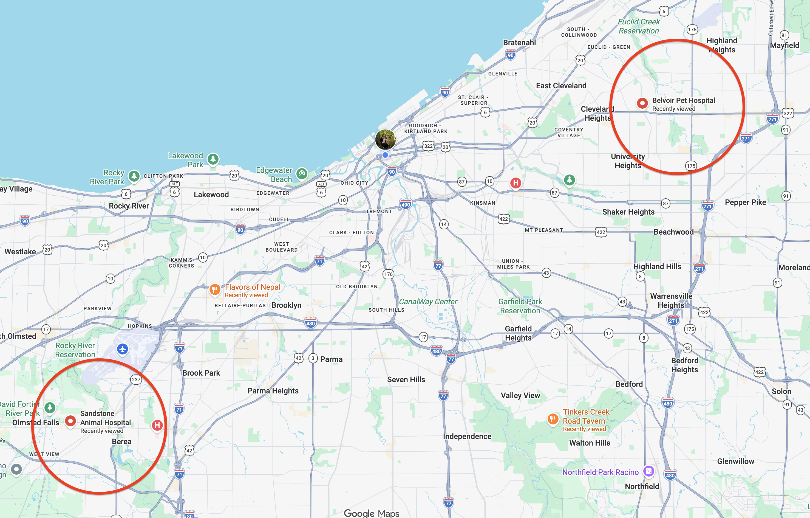

Complete care for the whole pet.
Clinical, behavioral, and everyday wellness — delivered where pets actually live.
Pets get better care when the vet is easy to reach — and sees the whole animal, not just the 15 minutes on an exam table once a year.
A client-centered practice, built around the pet's life.
Everyday Vet is built on a simple premise: pets get better care when the vet is easy to reach and sees the whole animal. Today we deliver that through two channels — virtual consultations across Ohio and in-person house calls in Greater Cleveland — already removing the biggest friction points in traditional care: travel, waiting rooms, and the stress that makes pets and owners put off the vet until something is wrong.
Our growth model extends this into a hub-and-spokes network: lightweight spokes close to where pets live — virtual, house calls, on-location visits, and a first neighborhood clinic downtown — backed by hubs, full-service partner clinics that handle anything requiring the pet to be put under anesthesia.
Why downtown, why now
Downtown Cleveland is the largest residential center in Ohio — ~21,000 residents, 35% growth since 2010, ~70% aged 18–44 — yet it has no veterinary practice in the core. Everyday Vet fills that gap as a resident-serving amenity that directly supports downtown's population-growth agenda.
The market is real and durable
Roughly two-thirds of U.S. households own a pet. U.S. veterinary spending reached about $40B in 2024 and is rising ~4–5% per year. Dog owners spend ~$250/year on routine visits alone — several hundred to $1,000+ all-in.
Already operating, capital-efficient by design
Virtual care and house calls are live, with hub partnerships at Belvoir and Sandstone and a downtown relationship with Dogtopia of Downtown Cleveland. Referring all surgery and anesthesia to hubs skips the $85–250K surgical van and $1–2M hospital buildout — Phase 1 launched lean (~$60–70K).
Industry and local figures are cited inline by source. Financial projections are illustrative — built on the assumptions stated in the Financials section — and are meant to be replaced with our own actuals as we refine.
The largest residential center in Ohio — with no vet in the core.
Downtown residents have two grocery stores and a pharmacy within walking distance. For a vet, the nearest options are a drive away in Ohio City, Tremont, and MidTown. Everyday Vet fills that gap as a resident-serving amenity that directly supports downtown's population-growth agenda.
Source: Downtown Cleveland, Inc. (“Why Downtown” & “State of Downtown,” 2025).
Everyday Vet advances Downtown Cleveland, Inc.'s growth agenda.
Population growth & retention
Pet-friendly amenities are a proven lever for attracting and keeping young urban residents. A neighborhood vet makes downtown a complete place to live — closing one of the last everyday-services gaps alongside groceries and pharmacy. With housing in a supply-driven reset, livability amenities are exactly what stabilize residential performance.
Storefront activation & the Retail Strategy
Downtown holds ~82% storefront occupancy with a net gain of 12 businesses in 2025; the market rewards resident-serving uses near foot traffic and residential density. A ground-floor spoke activates retail space and adds a daily-needs anchor with built-in repeat visits.
Street-level activation
On-location wellness visits and pet-focused events in public spaces — Public Square, district greenspaces, the lakefront and Towpath trails — put residents and pets on the street, the programmed everyday activity downtown is built around.
Diversifying toward residents
With ~70% of downtown retail sales currently driven by visitors, a resident-serving health amenity broadens the downtown economy toward the people who actually live there.
Compounding major investment
Against $4.6B in planned downtown investment, a vet practice is low-cost, high-visibility neighborhood infrastructure that strengthens the livability story developers and employers are already selling.
Already partnering downtown
This isn't hypothetical. Care is live now, and we already run wellness events at Dogtopia of Downtown Cleveland. The surgical/specialty backstop exists too: hub partnerships at Belvoir (east) and Sandstone (west).
Traditional care is built around the clinic's convenience — not the pet's life.
Access friction
Booking weeks out, driving across town, sitting in a lobby with a stressed animal — so owners delay care, and minor issues become expensive ones. For a downtown resident with no neighborhood vet, that friction is even higher.
Episodic, not continuous
A once-a-year exam is a snapshot. It misses behavioral shifts, slow-developing chronic disease, and the context of how a pet actually lives.
Stress distorts the picture
A frightened animal in an unfamiliar room doesn't behave normally — so the vet is diagnosing on bad data.
The behavioral gap
Anxiety, reactivity, and training issues are leading reasons pets are surrendered or euthanized — yet they're routinely treated as “not really medical” and left unaddressed.
Communication gap
Owners leave appointments unsure what to actually do. Care plans don't stick.
Net effect: pets are under-seen, owners are under-supported, and the relationship is transactional.
Meet pets where they are — and care for all of them.
Accessibility
Virtual consults statewide and house calls locally mean care fits into the client's day. Lower friction means more frequent contact and earlier intervention. In a dense, walkable, transit-rich downtown the model fits especially well — no parking, no cross-town drive.
Completeness
We treat the whole animal: clinical medicine, behavioral medicine (Dr. Meiggs' specialty), nutrition and diet, preventive and wellness care, and chronic-disease management. Seeing a pet in its own environment surfaces things a clinic visit never would.
Not telemedicine or house calls or a clinic — a tiered system that routes each pet to the right level of care at the right moment.
Everyday care close to the pet. Depth of service when it's needed.
Spokes deliver the routine, non-anesthetic care that makes up the vast majority of visits. Hubs — established partner hospitals — handle anything requiring the pet to be put under. We don't build the hospital; we partner for it.
Spokes — everyday care, close to the pet
Hubs — partner hospitals
A spoke refers surgical and anesthetic cases to whichever hub is closer — surgery, sedated imaging & X-ray, dental under anesthesia, and hospitalization. After-hours emergencies route to 24/7 emergency hospitals.

A spoke is cheap to stand up and stays near demand; a hub is shared across many spokes.
Clients keep one relationship — from a quick virtual check-in to surgery — without being handed off to strangers.
Continuity of record across every touchpoint — the holistic view that drives better outcomes.
The flow, in one line: house calls, virtual consults, and the downtown clinic all route to a full-service hub partner for surgery, anesthesia, and specialty work — every touchpoint centered on caring for pets where they actually live.
One continuous relationship, across every level of care.
Wellness & Prevention
Routine exams, parasite prevention, nutritional guidance.
Virtual · house call · clinicVaccinations
Core & lifestyle vaccines, travel and boarding requirements.
House call · clinicLabs & Diagnostics
Bloodwork, urinalysis, fecal, cytology — reference-lab work via our Antech contract, plus an in-clinic microscope.
House call · clinicPharmacy & Medications
Dispensing, prescriptions, refills, and home delivery.
Clinic · home deliveryBehavioral Medicine
Anxiety, reactivity/aggression, and training concerns — in-depth consults and treatment plans. Our core specialty.
Virtual · on-locationChronic Disease Management
Diabetes, kidney disease, arthritis, thyroid — monitoring & adjustment.
Virtual · house call · clinicAllergy Management
Symptom assessment and treatment planning for allergic pets.
Virtual · house call · clinicMinor Procedures
Local-anesthetic only: wounds, abscesses, ear cleanings, nail trims, anal-gland expression, biopsies, injections, fluid therapy.
House call · clinicDiet & Nutrition
Tailored plans for the individual pet.
VirtualUrgent (non-emergency) Care
Prompt attention for minor injuries and acute changes.
House call · clinicSurgery, X-rays & Anesthesia
Surgery, dental under anesthesia, advanced/sedated imaging, hospitalization.
Hub — Belvoir / SandstoneNot an emergency provider — life-threatening cases route to a 24/7 emergency hospital.
Big, durable, and growing — nationally and right here.
National backdrop
- Per-pet economics. Dog owners spend ~$250/year on routine vet visits and commonly $700+/year on veterinary care overall; total annual cost of dog ownership runs ~$2,500, of which vet care is the single largest or second-largest slice. Cats are lower but still meaningful.
- Humanization tailwind. ~97% of owners consider their pet “part of the family,” shifting spend toward wellness and experience. Millennials — the largest owner cohort — prioritize convenience and preventive care.
- Telehealth + mobile is the growth edge. The U.S. veterinary telehealth market was ~$4.5B in 2024 and is growing ~19%/year — exactly the model we lead with.
Our local market — Downtown Cleveland
- ~21,000 residents in the largest residential downtown in Ohio, 35% growth since 2010, ~70% aged 18–44 — the prime pet-as-family demographic.
- An amenity gap. Two grocery stores and a pharmacy within walking distance, but no vet in the residential core. Nearest general-practice vets sit outside it — Gateway Animal Clinic (Ohio City), Tremont Animal Clinic (Tremont), Cleveland Veterinary Clinic (MidTown).
- Bottom-up sizing (directional). ~14,000–15,000 households; at a conservative ~40% urban pet-ownership rate, that's ~5,500–6,000 pet-owning households and an estimated ~6,000–8,000 pets in the core alone — excluding the Greater Cleveland house-call market and the statewide virtual market.
- Foot traffic & events. ~40M annual visitors and a dense events calendar create natural activation opportunities for pet-focused programming.
Our beachhead: convenience-seeking, pet-as-family residents of downtown Cleveland who today have no vet in the neighborhood — expanding outward via house calls and statewide via virtual care.
Sources: AVMA; APPA 2023–2025 National Pet Owners Survey; U.S. BLS (vet services CPI); Grand View Research; veterinary telehealth industry estimates; Downtown Cleveland, Inc.
Fee-for-service. Transparent. No memberships, no lock-in.
Clients pay per visit and per service, with itemized pricing. Low-friction access brings them back for the recurring needs every pet has.
Virtual consult — async
Text-based asynchronous consult.
Virtual consult — video
30-minute timed video call.
House call
Visit + exam, first pet. Discounted per-pet fee for additional pets seen on the same visit.
À la carte
Vaccines, preventives, and diagnostics added per item, with transparent pricing.
| Stream | Description | Pricing |
|---|---|---|
| Virtual consult — async | Text-based asynchronous consult | $50 |
| Virtual consult — video | 30-minute timed video call | $75 |
| House call | Visit + exam, first pet | $130 |
| Additional pets | Add-on pet seen on the same visit | Discounted per-pet fee |
| Vaccines, preventives, diagnostics | Added to the visit, à la carte | Per item |
| Hub referrals / partnerships | Referral to partner clinics for surgery/specialty | Capital-light advanced care |
| Pharmacy / diet | Online pharmacy (home delivery) + in-clinic dispensing | Dispensing margin + storefront commission |
End-of-life and quality-of-life visits fall within the house-call scope (or a virtual consult where appropriate), not priced separately. Behavioral medicine is delivered through standard consults and house calls rather than a packaged program.
Recurring revenue without a subscription: low-friction access means clients come back for annual and lifestyle vaccines, parasite prevention, chronic-disease monitoring, behavioral follow-ups, and pharmacy/diet reorders. Vaccines, preventives, labs, and pharmacy together are ~30–35% of revenue — and grow with the client base. Transparent à-la-carte pricing is itself a differentiator against membership-based and corporate competitors.
Already operating. The downtown spoke is next.
Virtual care + Cleveland house calls
Virtual care (async + video) and Cleveland house calls are operational. The Phase-1 referral milestone is already met — hub partnerships secured with Belvoir (east) and Sandstone (west), and a downtown relationship established through wellness events at Dogtopia of Downtown Cleveland. We continue growing the client base while moving on Phase 2 in parallel.
- Hub partnerships secured
- Downtown business relationship established
- Operating lean, founder-funded
First downtown spoke
We're not waiting to hit Phase-1 targets — the downtown spoke is the immediate priority. Open a small, agile clinic in the Euclid / Gateway core (a ~$1,000/mo unit is under consideration), with Downtown Cleveland, Inc. support on siting and incentives. Labs run through our Antech contract; minimal fit-out.
Network
Add a second spoke in another district — Warehouse, Campus, or Flats — and deepen hub capacity. Templatize the spoke so each new one is repeatable.
An agile, low-overhead operation built for a walkable downtown.
Walkable, transit-rich
101 bus routes, 52 rail stations, and a dense core mean house calls and a central spoke reach clients without parking hassles.
Scheduling & records
A cloud-based practice-management system (PIMS) with integrated telehealth, a branded client app, and online booking maintains one continuous record across virtual, house-call, and spoke visits; route-optimization sequences daily house calls.
Hub handoffs
A defined referral protocol ensures a pet moving from spoke to hub keeps its history and care plan.
Coverage & boundaries
Clear non-emergency scope, with a 24/7 hospital partner for after-hours.
Staffing plan
Founder DVM + part-time / contract veterinary technician + part-time scheduling / admin.
Add an associate DVM (or full-time RVT) and a front-desk / CSR with the spoke.
Add an additional RVT / CSR and an operations / partnerships lead as volume grows.
The moat is the combination.
App-only players can't examine a pet. Traditional clinics can't match the access. And no one currently serves the downtown residential core.
| Traditional clinic | Corporate / chain | Pure tele-vet app | Everyday Vet | |
|---|---|---|---|---|
| Convenience | Low | Medium | High | High |
| In-person when needed | Yes | Yes | No | Yes — house call + hub |
| Behavioral depth | Varies | Low | Low | Core specialty |
| Whole-pet continuity | Episodic | Episodic | Fragmented | Continuous |
| Capital intensity | High | High | Low | Low spoke + leveraged hub |
| Downtown core presence | None | None | n/a | First mover |
Our moat: the combination — convenience of tele/mobile, the safety net of real in-person and hub care, and genuine behavioral expertise, all under one continuous relationship.
Capital-efficient by design.
Because all surgery and anesthesia are referred to hub partners, Everyday Vet skips the $85–250K surgical van and the $1–2M hospital buildout that burden conventional practices.
Virtual + house calls
- Vehicle ~$50K
- Mobile refrigerator ~$300
- Initial pharmacy inventory ~$5–15K
- PIMS setup ~$1K (then a monthly subscription)
- Legal / accounting / incorporation ~$2–4K
- Standard licensing and insurance
- Launch marketing: $0 — growth has been organic / referral
No surgical van or hospital buildout required.
Downtown spoke — agile, low-overhead
- Rent ~$1,000/mo (~$12K/yr) for the unit under consideration
- Lab work via our Antech reference-lab contract — minimal in-clinic equipment
- Quality microscope ~$1–3K plus general clinic supplies
- No in-house surgical or advanced-imaging suite (referred to hubs)
Lower net of any DTCLE incentives or landlord tenant-improvement allowance.
3-year revenue projection illustrative
| Year 1 | Year 2 | Year 3 | |
|---|---|---|---|
| Visit & exam fees | ~$96K | ~$285K | ~$520K |
| Virtual consults | ~$25K | ~$73K | ~$113K |
| Vaccines | ~$20K | ~$60K | ~$104K |
| Diagnostics & labs | ~$20K | ~$52K | ~$94K |
| Prevention & pharmacy (dispensing margin) | ~$22K | ~$75K | ~$149K |
| Hub referral fees | ~$2K | ~$5K | ~$10K |
| Total revenue | ~$185K | ~$550K | ~$1.0M |
| Active client households | ~250 | ~650 | ~1,100 |
| Billable visits / yr | ~900 | ~2,700 | ~4,500 |
| Gross margin (pre-owner-comp) | ~62% | ~58% | ~60% |
| Spokes / hub partners | 0–1 / 2 | 1 / 2 | 1–2 / 2–3 |
Assumptions
House-call visit + exam $130 (first pet; discounted add-on pets), virtual $50 async / $75 video, vaccines ~$80 per vaccinating visit, labs ~$70 per event, prevention/pharmacy ~$100–130/yr per client (dispensing margin). End-of-life and behavioral visits are billed as house calls or virtual consults. Vaccines, preventives, labs, and pharmacy together are ~30–35% of revenue. Margin is pre-owner-comp and blended; revenue scales with vet capacity as the spoke and staff lift volume.
Funding
Phase 1 is founder-funded (~$60–70K, already invested) — the model's deliberate capital efficiency. Phase 2, the downtown spoke, is the immediate next step; its modest agile cost is funded through founder investment, with DTCLE incentives and any landlord tenant-improvement allowance reducing net outlay.
Illustrative model built on the stated assumptions — to be replaced with our actuals as we refine.
Founder & veterinarian.
Dr. Sara Meiggs, DVM
Founder & Veterinarian
Graduated from The Ohio State University College of Veterinary Medicine (2017), with nearly a decade of clinical experience. Special interest in behavioral medicine and comprehensive patient management — diet selection, preventive care, and overall welfare.
Deeply committed to client education and closing the communication gap between vets and owners. Lives in Cleveland with her family and their cat, Chaplin.
Planned hires as the network grows: associate DVM, veterinary technician(s), front-desk / CSR, and an operations / partnerships lead.
Not a check — a partnership.
We're not seeking a check from DTCLE — we're seeking partnership to land a resident-serving amenity that advances downtown's growth goals.
Storefront siting & leasing support
Help identifying ground-floor space in the Euclid / Gateway core (storefront relocation & growth program), and intros to developers and landlords with the right space and tenant-improvement allowances.
Business incentives & resources
Access to available incentives for a new downtown small business to offset Phase-2 fit-out costs.
Inclusion in the Retail Strategy
Recognition of veterinary care as a target daily-needs category for the resident base.
Marketing & visibility
Channels and events to reach downtown residents — newsletters, district programming, pet-focused activations.
Data partnership
Refining local demand sizing using DTCLE's residential and market research.
In return
Downtown gains a first-of-its-kind neighborhood vet: an activated storefront, recurring resident foot traffic, street-level pet programming, and one more reason for young households to choose — and stay — downtown.
Phase-2 fit-out is modest under the agile model; founder investment covers it, with DTCLE incentives and any landlord tenant-improvement allowance reducing net cost.
Let's build it together.
Ready to talk about siting the first downtown spoke? We'd love to hear from you.